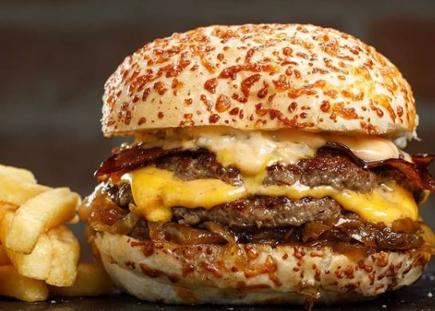

Te contamos un poco de
Nuestra Historia
GODINSTA era un tradicional restaurant de Buenos Aires, fue fundada en 1980 por dos ex-tenistas de los clubes San Juan y San Pedro: Hernan Pitt y Ernesto Sanchez. Durante muchos años recibió a un monton de figuras del ámbito deportivo y artístico de nuestro país en su local del barrio de Palermo. En el año 2001 luego de la crisis que sufrio el pais volvio a reabrir sus puertas de la mano del hijo de Hernan Pitt, y se convirtio nuevamente en uno de los mejores restaurant del pais.
Hoy en dia debido a las nuevas modas que van surgiendo en el ambito de la comida el Restaurant fue reestructurado y nos hemos convertido en un restaurant que se especializa principalmente en Milanesas y Hamburguesas. Tambien nos especializamos en Pizzas a las parrillas que son imperdibles. Algunas de las especialidades son la Milanesa Napolitana como siempre y la nueva Milanesa con Cheddar que es una bomba y que no te podes perder, en el lado de las hamburguesas la Triple Cheese y Bacon Doble con Salsa Alioli son las mas recomendadas por nosotros. En GODINSTA podran disfrutar las mejores comidas que vos elijas viendo partidos de futbol en familia.
Ahora en el Barrio de Nuñez y Palermo, vas a poder disfrutar de nuestras comidas, rodeado de los mejores recuerdos, muchas gracias por elegirnos